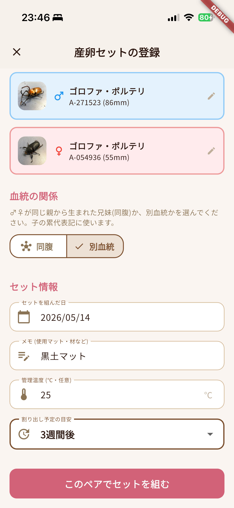
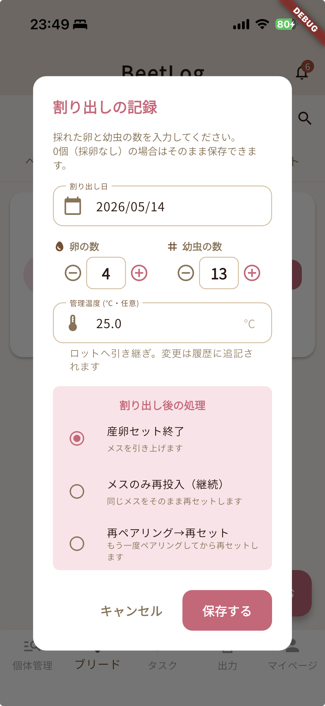
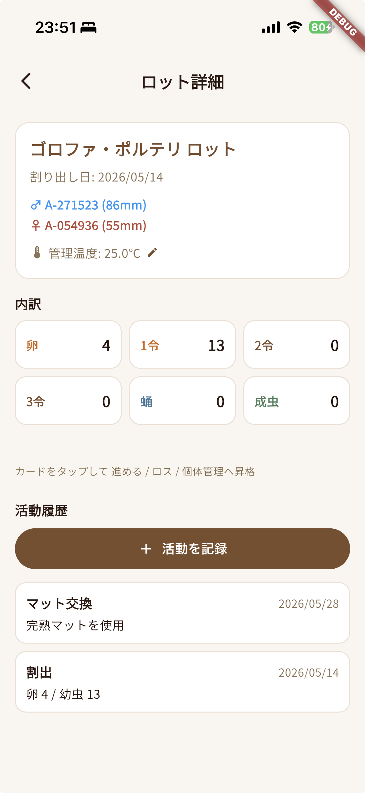
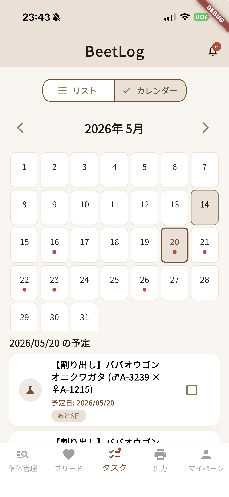
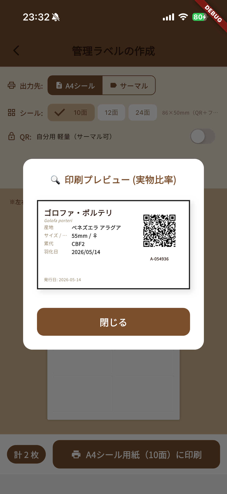
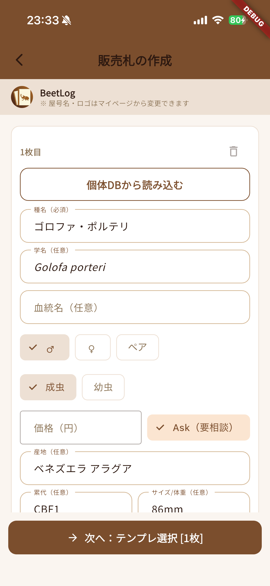
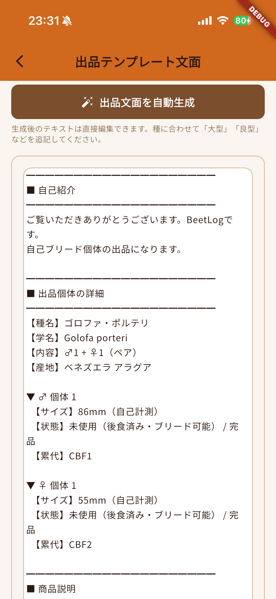

01
紙のノート
追えない、渡せない。
- 写真と記録が結びつかない
- 累代を遡るのに時間がかかる
- 譲渡時に情報を渡せない
記録の手間を最小化し、データを世代を超えて活かす。それが BeetLog の役割です。
書き足すたびに貼り重ねていた管理ラベルは、もう必要ありません。
貼ったら、あとはスマホへ。クラウドで永久保存。
個体管理・ブリード記録・データ分析、そして譲渡や販売の場面まで。
種・亜種・血統・産地・累代・性別・状態まで、個体ごとに記録。管理番号（任意）も付与できます。
代表写真に加え、飼育中の履歴写真も保存。成長の過程をそのまま残せます。
親・系統を累代ツリーで可視化。血統の流れがひと目で追えます。
ハンドペア・同居の履歴を残し、産卵セットへスムーズに移行。
産卵数や割り出し予定を管理。そのまま幼虫ロットに引き継げます。
卵・幼虫・蛹・成虫の数を一括管理。昇格・廃棄もワンタップ。
飼育場所ごとの温度を記録し、シーズン管理をサポート。
ゼリー交換や割り出しなど、飼育イベントを通知でリマインドします。
QR 付きラベルを 1 枚貼るだけ。書き加えず、スマホからアプリ内に情報を蓄積。
飼育レポートを PDF で、記録を CSV で書き出し。データはいつでも手元に。
即売会の販売札と、SNS・通販向けの出品テンプレートをアプリ内で作成。
譲渡相手に QR で個体情報を引き継ぎ。血統が途切れません。
毎日の入力に効くショートカットと、累代を遡る視認性を両立。
BeetLog は飼育の入力から、ラベル印刷・出品文面・販売札の作成まで、ブリーダーの動線にあわせて設計されています。

ペア・床材・容器・管理温度をひと画面で。割り出し予定の目安まで自動で。

卵数・幼虫数を記録して、次のアクション（再セット／引き上げ）を選ぶだけ。

卵・1令・2令・3令・蛹・成虫をステージ別に管理。昇格も死亡もタップ操作で。

ゼリー交換・割り出しなど日々のタスクをカレンダー＆リストで。当日朝に通知。

個体ごとの QR を A4 シールやサーマルプリンタへ。書き加えなくても、スマホで即アクセス。

個体 DB からの読み込みに対応。8 種類のテンプレから選んで A4 シールに印刷。

個体データから、ヤフオク・メルカリにそのまま貼れる出品テキストを生成。
個体情報を暗号化して QR ＋ 8 桁の請求コードに。血統を途切れさせず受け渡し。
QR スキャン、または 8 桁コード入力で個体情報を復号して引き継ぎ。
インストールしたその日のうちに、記録をはじめられます。
種・血統・産地・写真をサクッと入力。QR があれば、ほぼワンタップで取り込み。
エサ替え・体重測定・温度をタップで記録。産卵セットや幼虫ロットも紐づけて管理。
QR で個体情報を相手に引き継ぎ。即売会や通販には販売札を印刷して。
個体管理から産卵セット、幼虫ロット、温度管理、タスク、譲渡 QR まで。飼育の記録と管理は、無料プランで完結します。Premium は「もっと使い込む人」のための拡張です。
※ 管理ラベル（QR）の印刷は、無料プランでも回数無制限でご利用いただけます。
※ 無料プランは将来的に、カブト・クワガタ関連（飼育用品・マット・イベント告知など）の広告表示を予定しています。
課金は App Store / Google Play 経由です。解約は購入元のサブスクリプション設定からいつでも可能です。
App Store / Google Play で順次公開予定です。公開のお知らせは X (@beetlog_app) で発信しますので、ぜひフォローしてください。
はい。個体管理・産卵セット・幼虫ロット・温度管理・タスク・譲渡 QR など、日々の記録と管理は無料プランですべてお使いいただけます。Premium との違いは主に 3 点（出力系 5 機能の回数制限の解放／履歴写真のクラウド保存・復元／譲渡時に写真も引き継ぎ）です。さらにローンチから一定期間は、Premium 機能を含めて全機能を無料でお試しいただける予定です。
飼育データはクラウド (Google Cloud / Firebase) に安全に保存されます。詳しくはプライバシーポリシーをご確認ください。
アカウントでログインすることで、新しい端末でも同じデータをそのままご利用いただけます。アカウントを作らずに利用（ゲストモード）した場合は端末内のみの保存となるためご注意ください。
個体情報（種・血統・産地・累代など）を QR コードで他のユーザーへ引き継げる機能です。譲渡や販売のたびに血統情報が途切れず、ブリーダー同士でデータをスムーズに共有できます。
iOS は「設定」→「Apple ID」→「サブスクリプション」、Android は「Google Play ストア」→「アカウント」→「定期購入」からいつでも解約できます。詳しくは特定商取引法に基づく表記をご覧ください。